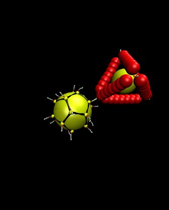

|
 |
|---|---|
| pic 1 | pic 2 |
Introduction: Nanoparticle (NP) assemblies have numerous demonstrated and predicted applications, such as optical or electronic materials, biosensing, drug delivery and others. For many of these applications, an ordered structure of NPs, rather than an amorphous structure, is preferred or even necessary. One way to create ordered nanostructures is by taking advantage of the specific recognition and sequence control offered by DNA. Lattices with cubic diamond (CD) symmetry with nm scale spacing are predicted to have interesting optical properties, such as a complete optical band gap in 3D. Very recently, we create DNA-functionalized NPs with directional interactions that assemble into CD symmetry, opening the possibility to realize these novel materials.
Research: My current research is about studying the stability of CD lattice as a function of NP size. Using molecular dynamics simulation and dynamical theory of crystal lattices, I estimate the free energy of the lattice for different NP sizes. The optical properties of lattices can be tuned by changing NP size. So having better knowledge about stability of CD lattices as a function of particle size is important. Furthermore I’m trying to study the crystallite shape of CD lattices by calculation the surface energy and Wulff construction method. Vibrations of NPs in the lattice can affect the optical properties (optical band gap and plasmonic effects). I also try to study the effects of lattice vibration on optical properties of this CD lattice.